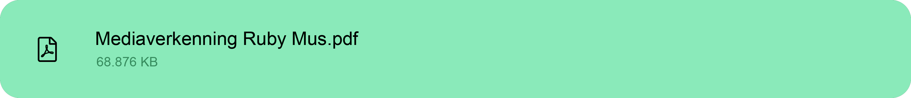
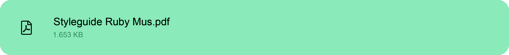

Ruby Mus


Wij hebben 9 weken voor de artiest Ruby Mus gewerkt. Wij hebben in deze weken een hoop producten voor haar gemaakt. Op deze pagina laat ik zien wat ik allemaal voor haar gecreeërd heb en hoe ik dat gedaan heb.
Ik het begin van het project Ruby Mus moesten we een mediaverkenning maken om haar een blik te geven op welke richting we in wilde qua design en producten. Ik heb het gedeelte huisstijl gemaakt van de mediaverkenning, hiervoor heb ik onderzoek gedaan naar logo design, kleuren, vormen en typografie. Ik heb per onderwerp een conclusie gemaakt die wij wilde toepassen voor het project Ruby Mus. Scroll naar beneden voor het onderzoek naar de huisstijl.
Voor design heb ik ook een hoop dingen gemaakt tijdens het Ruby Mus project. Zo heb ik de stijl van de mediaverkenning bedacht en ook het titelblad hiervan. Naast de mediaverkenning heb ik ook het uiteindelijke logo voor Ruby Mus ontworpen. Ook heb ik nog 2 voorbeelden van albumcovers gemaakt voor haar. De styleguide heeft ook te maken met design. Deze heb ik samen met Twan Sekeris in elkaar gezet.
Ik heb tijdens dit project een hoop dingen gemaakt en dit heeft me ook nieuwe dingen geleerd. Zo met ik in aanraking gekomen met InDesign, dit programma heb ik aantal keer gebruikt voor wat bestand die uitgewerkt moesten worden voor Ruby Mus. Ook heb ik ook meer geleerd op het gebied van design. Welke kleuren geven welk gevoel aan en hoe zet je tekst nu netjes neer op een blad.
Ik het begin van het project Ruby Mus moesten we een mediaverkenning maken om haar een blik te geven op welke richting we in wilde qua design en producten.
Het titelblad van de mediaverkenning is ontworpen door mij, we wilde als stijl "neon" aanhouden. Op de achtergrond van het titelblad zie je heel vaak haar artiesten naam, ik heb het zo gemaakt dat het lijkt op een neon sign. Het lijkt ook alsof de "lampen" minder fel worden als je van boven naar beneden kijkt. Ik heb om sommige namen een rand gedaan om de naam van de artiest wat meer naar voren te halen en de drukke achtergrond ook echt op de achtergrond te laten. Ik heb hem afgemaakt door er een foto van Ruby Mus op te zetten, deze foto heb ik wat ge-edit. De foto lijkt een beetje van papier doordat ik dat er achter gezet heb en gemengt heb met de foto. Verder zijn de randen niet recht maar heeft het aparte vormen. Onder de foto zit ook nog een gloed.
Zoals ik hier boven al zei heb ik voor de huisstijl onderzoek gedaan. Maar het design van mijn huisstijl pagina matcht met de gehele mediaverkenning. Ik had er voor gekozen om alle titels in de neon stijl te houden. Ook zie je op elke start van de pagina een rode balk terug komen. Zo zie je wat de eerste pagina is van dat hoofdstuk, de balk komt ook terug op de andere pagina's. Hier zit hij aan de linker kan van het bestand. Wanneer je naar beneden scrollt blijft de balk mooi op de zelfde lijn zitten. Ik koos er voor om mijn teksten mooi in kopjes te zetten. Ik heb ook alle tekst uitgelijnd zodat alles recht staat. Je ziet ook dat de tekst recht is uitgelijnd tot een bepaald niveau. Ik vind dat dit rust en overzicht creeërd op het blad.
Als laatst heb ik de bronvermelding nog in elkaar gezet. Dez is niet super speciaal. De bronnen staan niet in APA-stijl, dit is
omdat ik toen nog geen idee had dat dit een ding was. Verder heb ik de balk onderaan de pagina in de vorm van een soort geluidsgolf gezet.
Ook het blad effect komt terug op het gedeelte waar de bronnen staan.
Klik op de knop hieronder om de mediaverkenning te bekijken.

In het begin van het project hebben we gelijk een logo ontworpen. Iedereen uit ons groepje had een paar logo's ontworpen. Degene die je hiernaast ziet zijn mijn logo's. Je ziet dat ik verschillende iteraties gemaakt heb, net zoals de rest van mijn groepje. Ik heb het logo rood gemaakt omdat dat de kleur is waar Ruby Mus zich aan wilde koppelen het staat voor een heel veel verschillende emoties. Deze emoties laat ze ook in haar muziek terug komen. Het onderste logo is het uiteindelijk geworden, je ziet dat er een neon stijl logo is. Dit is ook wat we als thema hadden voor ons Ruby Mus project.
Naast het logo heb ik ook twee album covers voor Ruby Mus gemaakt deze heb ik ook weer in de stijl rood wit en zwart gehouden. Ruby had in haar moodboard een foto van handen met rode verf erop staan. Dit idee uit aan moodboard heb ik verwerkt in een van de covers. In de andere zie je ook twee handen die vastzitten met een touwtje, de kleur van het touwtje matcht met de omranding van de cover.
Album covers zijn heel nice!
~ Ruby Mus
De styleguide van Ruby Mus is een soort online boekje met alle regels die behoren tot haar logo's, teksten, kleuren, etc.
Ik heb deze styleguide gemaakt met hulp van Twan Sekeris, in onze styleguide staat wat de kleuren zijn die wij hebben gebruikt bij haar ontwerpen.
Ook staat er in hoe je de logo's wel en niet moet gebruiken. Naast dat hebben we ook nog de 3 fonts die we gebruikt hebben er bij gezet.
Deze guide is gemaakt voor iemand die nog niet met Ruby Mus gewerkt heeft, de desbetreffende persoon weet zo gelijk wat haar stijl is.
Klik op de knop hieronder om de mediaverkenning te bekijken.

Tijdens het project van Ruby Mus heb ik een hoop geleerd over design, onderzoek, en het uitdenken van ideeën. Naast dat heb ik veel geleerd van het samenwerken als een groep. Ik had vaak mijn eigen ideeën over sommige dingen maar ik merkte dat mijn groepsgenoten ook goede ideeën hadden. Over het algemeen heb ik veel geleerd van dit project, je krijgt niet vaak de kans om een artiest te branden. Het was veel denk werk zo heb ik er mentaal dus ook van geleerd.
De volgende keer dat ik zo'n project start zou ik beter willen plannen, vaak zaten we wat kort aan tijd met sommige dingen. Ook zou ik eerder de knoop door willen hakken bij bepaalde keuzes/situaties. We hadden vaak halve ideeën waar we vaak niet uit konden kiezen en zo dus tijd verloren.